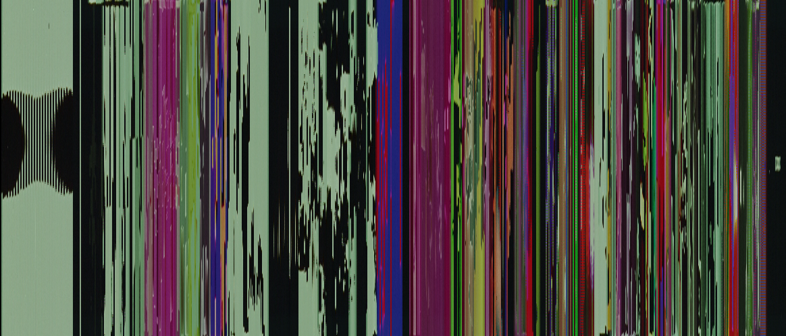
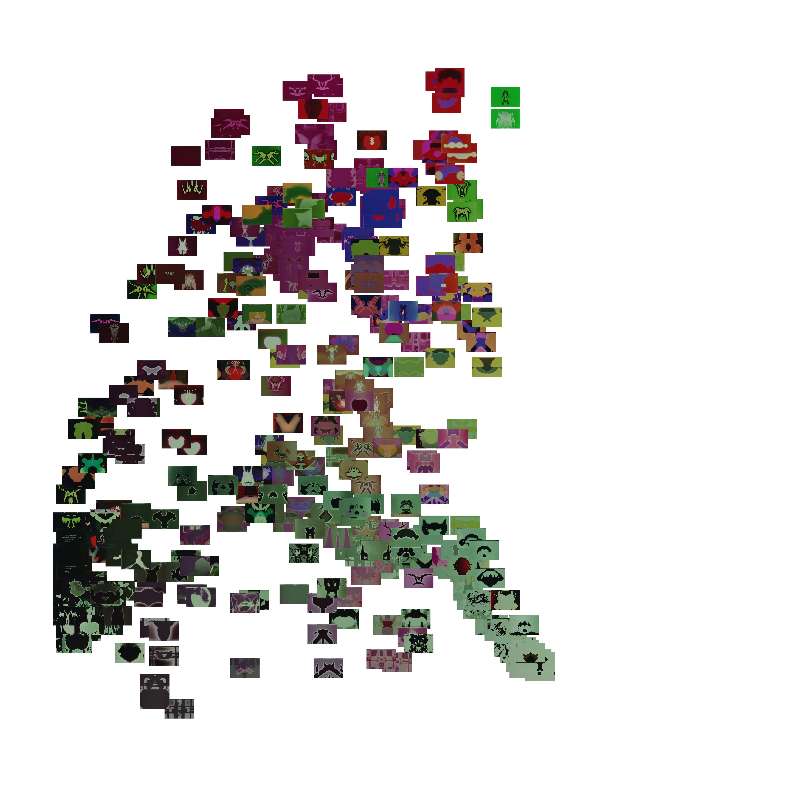
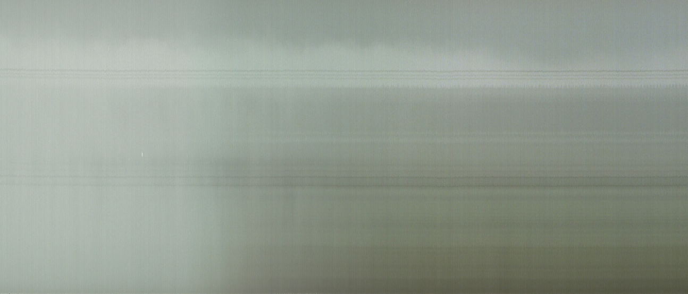
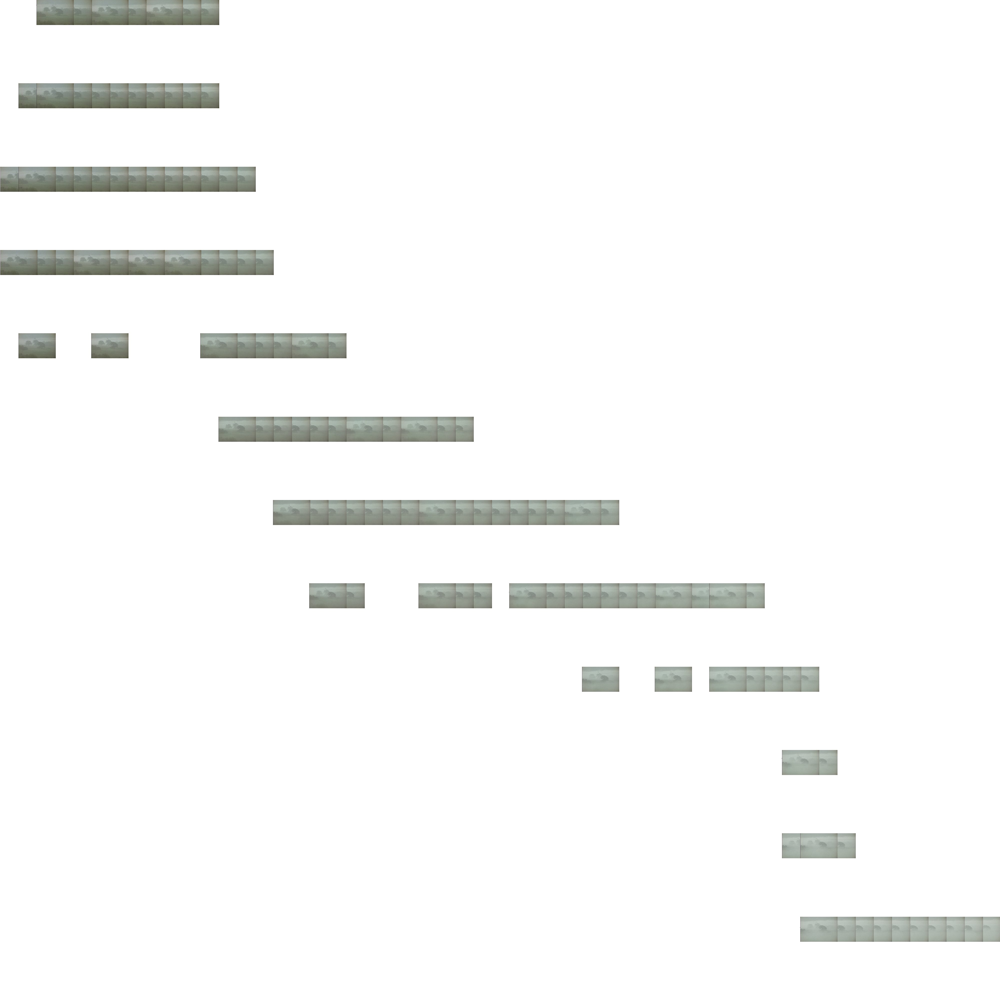

Indeterminable Frames
A digital humanities + film and media studies project re-examining the moving image.
Analysis
7362 (1967) by Pat O'Neill
"A bilaterally symmetrical (west to east) fusion of human, biomorphic and mechanical shapes in motion. Has to do with the spontaneous generation of electrical energy. A fairly rare (forty years ago) demonstration of the Sabattier effect in motion. Numbered after the film stock of the same name."
— Pat O'Neill in the International Film Festival Rotterdam (IFFR) 2011 program
*
Fog Line (1970) by Larry Gottheim
"The fog lifts on a scene. For an attentive viewer the mental fog could also lift. It doesn’t go from white to full clarity. It just shows a piece of time, a section of a process in the landscape and in the mind of the viewer. The entire image slowly changes, the sky, the ground, what’s at the edges."
— Larry Gottheim on Fog Line (1970) according to his his website

*
Chakra (1972) by Jordan Belson
— From the Center for Visual Music's Jordan Belson - Film Notes
"Usually the subjects I chose to build images around had some kind of traditional form of their own that I found useful in constructing my film. Take Chakra (1972), for instance. If you study the chakras (the psychic centers in the body), you find that there are seven of them... They’re usually depicted as arranged along the spinal column and described starting from the bottom, going to the top. Each chakra has its own unique characteristics, and centuries of elaboration and analysis have accumulated around these characteristics..."— From the Center for Visual Music's Jordan Belson - Film Notes

*
Bad Burns (1982) by Paul Sharits
"Two reels of mis-takes in shooting Part II of 3RD DEGREE. Film was loaded in camera improperly and the image slides about off-center and becomes blurred – creating some rather amusing and mysterious imagery. A made 'found' object."
— From the Film-Makers' Coop catalog listing for Bad Burns (1982)
*
Juan Gapang (Johnny Crawl) (1987) by Rox Lee
"A man crawls on the streets of Manila at the height of the EDSA Revolution."
— From Rox Lee's YouTube page